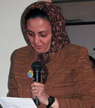

پذيرش > تریبون > گزارش كمپين > پیروزی از آن ماست
 اعضا و حامیان در نخستین سالگرد کمپین یک میلیون امضا: اعضا و حامیان در نخستین سالگرد کمپین یک میلیون امضا:

 پیروزی از آن ماست پیروزی از آن ماست
8 شهریور 1386 - گزارش تصویری : راحله عسگری زاده - نسخه قابل چاپ
پس از بی نتیجه ماندن کوشش های مداوم اعضای کمپین به ویژه خدیجه مقدم برای گرفتن مجوز برگزاری مراسم سالگرد کمپین در یکی فرهنگسراها، این مراسم بعد از ظهر دوشنبه 5 شهریور در منزل مسکونی یکی از اعضای کمپین یک میلیون امضا برگزار شد.
اين مراسم كه با حضور اعضاي كمپين، داوطلبان جمع آوري امضا و اعضای کمیته های مختلف و حامیان اين حركت برگزار شد با برنامه های متنوعی چون سخنرانی ، گزارش کمیته ها، موسیقی ...همراه بود، همچنین ارائه مجموعه مقالات نوشین احمدی خراسانی در کتابی با عنوان «جنبش یک میلیون امضا، روایتی از درون» و سنجاق هایی با آرم کمپین یک میلیون امضا، کار تارا نجد احمدی در اختیار علاقه مندان قرار گرفت. در این برنامه کلیپ کمپین کاری از جلوه جواهری از اعضای کمپین پخش شد وکمیته پسران کمپین نیز کلیپی ازفعالیت پسران در کمپین تهیه کرده بودند که به جای خودشان برای حاضران پخش شد.
سوسن طهماسبی : بیش از 1000 داوطلب و حامی با کمپین فعالیت می کنند
اداره این برنامه را سوسن طهماسبی از اعضای کمیته روابط عمومی کمپین عهده دار بود. وی در شروع برنامه گزارشی کوتاه از روند فعالیت کمپین و تاثیر آن در سال گذشته ارائه داد: "امروز جشن سالگرد کمپین یک میلیون امضا است. یک سال پیش درهمین روز این کمپین پشت درهای بسته سالن رعد کار خود را آغاز کرد. چه سال پر باری بود. یک سال پیش وقتی در مورد چگونگی شروع و اجرای کمپین مشغول به بحث، تبادل نظر و گقتگو بودیم هیچ تصور نمی کردیم که در مدت یک سال کمپین ما تبدیل به یک جنبش و در این سطح وسیع مطرح شود. اکنون بیش از 1000 داوطلب و حامی به صورت رسمی با کمپین فعالیت می کنند و تعداد بی شماری از زنان و مردان برابری خواه در چارچوب همین طرح مشغول به جمع آوری امضاء و تبلیغ برای این حرکت مسالمت آمیز هستند. کمپین به صورت رسمی در 20 استان فعال است و در دور دست ترین نقاط ایران مردم با این طرح و کنش فعالان آن آشنا هستند و این کمپین زنان ایرانی در دورافتاده ترین نقاط دنیا مثل کشورهای نپال و بورکینو فاسو، توسط فعالان زنان دنبال می شود. یک سال گذشته وقتی کمپین کارش را آغاز کرد هیچ فکر نمی کردیم که جرقه ای باشد که منجر به مطرح شدن مطالبات حقوقی زنان در میان توده های مردم و در بالاترین رده های نظام شود. امروز حقوق زنان تبدیل به بحثی رایج، پویا و همگانی شده و از اولویت بالایی بر خوردار است که البته این امر به عنوان دستاورد بزرگی برای تمامی طرفداران حقوق برابر به شمار می آید. موفقیت کمپین و گستردگی آن مدیون همت کنشگران این طرح و به خصوص جوانانی است که به دنبال فرصتی برای ابراز وجود در عرصه اجتماعی به منظور بهبود جامعه و کشور خود هستند. در یک سال گذشته شاهد ظهور رهبران جوانی در جنبش زنان بودیم که از پایگاه کمپین و سایت آن برای بازگویی تجربیات خود، ارائه تحلیل در مورد وضعیت زنان و جنبش زنان و کمپین استفاده کردند و شاهد همراهی بی سابقه مردان در مطالبه حقوق برابر برای زنان بودیم—مردانی که امروز جای خالی آنان در این جمع به شدت حس می شود. تعهد همین جوانان به حقوق بشر و زنان برای من باعث افتخار و امید به آینده کشورم است.
یک سال پیش در آغاز این راه هیچ فکر نمی کردیم که به این صورت سوژه دستگاه های امنیتی کشور شویم که با حکم شلاق، زندان، تهدید، و ایجاد رعب و وحشت قصد بر منفعل کردن کوشندگان این کمپین دارند، به خصوص کوشندگان جوانی که اتفاقا بعد از انقلاب به دنیا آمده اند و آرمانهای عدالتخواهی را درونی کردند با تکیه بر همین آرمانها به راه خود ادامه خواهند داد.
کمپین از آغاز کار تکیه بر ساختاری غیر متمرکز و سیال داشته است و همین ساختار باعث رشد و فراگیر شدن این حرکت شده است. در تهران فعالیت های کمپین از طریق کمیته ها پیش می رود و در شهرستانها ساختار کمپین بر حسب نیازو امکانات بومی و محلی هر شهر توسط اعضای کمپین در آن شهرتعریف می شود. " طهماسبی در اعلام برنامه ادامه داد: امروز علاوه بر ارائه چند سخنرانی توسط اعضای کمپین از کمیته های فعال در تهران دعوت شده است تا گزارشی از پیشرفت کار خود در سالی که گذشت ارائه دهند.
زهره ارزنی : ارائه لایحه حمایت خانواده واکنشی است به خواسته های حق طلبانه زنان
قوه قضائیه و مجلس تصمیم گرفتند قوانین مختلف را جمع کنند و تحت عنوان یک قانون گرد آورند که از آن به عنوان تجمیع قوانین یاد می شود و جالب آنکه سال اول هم قرعه به نام ما زنان افتاد و لایه حمایت خانواده را جمع کردند. البته من لایحه پیشنهادی دولت را مطالعه کردم و متاسف شدم. در لایحه دولت عملا نه تنها چیزی اضافه نشده که عقبگرد هم وجود داشته است. جنبش حقوقی زنان در این صدساله، مدام فریاد می زند که قوانین صدسال گذشته حتی در دوران خودشان هم که توسط مردان قانون وضع شدند نسبت به زنان تبعیض آمیز بودند، کمپین یک میلیون امضا در این یکساله با نقد به قوانین کنونی پیامدهای تبیعض های حقوقی می گوید ، طیف های گوناگون اجتماعی از علمای دینی گرفته تا حقوق دانان ، فعالان احتماعی و سیاسی ...بر ضرورت تغییر قانون تاکید و اصرار دارند، آن وقت می بینیم دولتی که انگار بیگانه با جامعه زنانش هست لایحه ای پیشنهاد می دهد که حتی نسبت به تعییرات مثبتی که در قانون شده بود عقبگرد کرده است.
آنها کار زیادی انجام نداده اند ، در تجمیع قوانین موجود، کم لطفی هم کرده اند، قانونی را که در 1310 تصویب شده بود می خواهند مجددا تصویب کنند. انگار مواقعیت ما زنان با آن موقع فرق چندانی نکرده است. دراین لایجه مجددا بر ازدواج مجدد و موقت اصرار شده است. در باب طلاق هم در بر همان پاشنه می چرخد، زنان باید باز هم کفش آهنی بپوشند و همان شرایط سابق را برای طلاق به اثبات رسانند. در ازدواج مجدد هم دادگاه را صاحب صلاحیت دانسته اند. یعنی اگر دادگاه تشخیص داد که مرد توانایی مالی دارد دیگر اجازه زن نیازی نیست. زن انسان نیست، احساس ندارد، تنها موجودی است که باید شوهر داری کند. نمی دانم زنان دولتی مدافع این لایحه چه گونه این تبعیضات را تایید کرده اند! در مورد سن ازدواج هیچ تغییری حاصل نشده است. اکنون طبق آمارها سن متوسط ازدواج دختزان ما 27 سال است، آنوفت در این لایحه همان 13 سال تایید شده است. مگر نه این که قوانین پویا ظرفیت تغییر را در طول زمان و مکان دارند، اگر چنین نیست دیگر چرا لایحه جدید می نویسند؟ در مورد دیگر برای مهریه های سنگین مالیات تعیین شده است، اما تکلیف ما را در ما به التفاوت ارث یا در دارایی مشترک مشخص نمی کنند. در دارایی که طبق روال به نام شوهر ثبت می شود، من "زن" چه باید بکنم اگر شوهرم فوت شود؟ می گویند مهریه سنگین باید مالیات داشته باشد، آن مالیات را هم زن باید بدهد نه مرد. خب ما هم مخالف گذاشتن مهریه های سنگین هستیم اما راهی را برای تامین مالی زن پیشنهاد نمی دهند. من به زنان پیشنهاد می کنم که تک به تک به کمیسیون زنان نامه بنویسند و بگویند سهم ما زنان در این لایحه چیست؟ بگویند من مادر هم حق دارم در قانونی که برایم نوشته می شود سهیم باشم. بیایید دست در دست هم دهیم و نگذاریم این لایحه تصویب شود چون این لایحه در جهت افزایش تبعیضات قانونی موجود است نه در جهت کاهش آن. ارائه این لایحه واکنشی است در برابر خواسته های حق طلبانه زنان که طی یک سال اخیر عمومیت یافته است. متاسفانه مردم مانه تنها جلوتر از قانون هستند که جلوتر از قانون گذاران و مجریان آن هستند. اگر دولت خواسته است که از روش دولت مدرن 1353 در ارائه لایحه حمایت خانواده در جامعه نسبتا سنتی – گرچه در جهت عکس آن - الگو برداری کند، دچار یک اشتباه تاریخی شده است، جامعه مدرن کنونی لوایح دولت سنتی کنونی را بر نمی تابد.
ناهید کشاورز: ما برحقانیت خواسته هایمان پیگیرتر شده ایم
ناهید کشاورز که روز 13 فروردین هنگام جمع آوری امضا در پارک لاله بازداشت شده بود درباره " روند کمپین در یکسال گذشته و فشارهای وارده بر فعالان کمپین " گفت:« در تعاریف مختلفی که از جنبش اجتماعی می شود بر وجود مخالفت و موانع بر سر راه جنبش به عنوان یکی از شاخص های مهم وجود جنبش های اجتماعی تاکید می شود. به نظر می رسد کمپین یک میلیون امضا به عنوان پیگیرترین حرکت جنبش زنان در دوره اخیر وجود مخالفت ها و موانع را در گسترده ترین شکل در مقابل خود دیده است.و کنشگران کمپین انرژی بسیاری را در برطرف کردن این موانع و مخالفت ها در یک سال اخیر صرف کرده اند که شاید اگر این انرژی ها می توانست به جای عبور از بحران ها ، صرف آگاه سازی و ارتباط با شهروندان زن و مرد برای عمومی کردن بحث برابری زن و مرد می شد، کمپین به هدف خود که جمع آوری یک میلیون امضاء برای ارائه به مجلس است، بسیار نزدیک تر شده بود.»کشاورز به برخی از این دشواری ها از جمله ندادن مجوز برای نشست های کمپین، بازخواست فعالان و حامیان کمپین برای در اختیار نهادن منزل خود برای نشست ها، دستگیری های کنشگران کمپین در ماه های گذشته و دادن حکم زندان برای برخی از آنان ، اخراج و یا تهدید به اخراج برخی از فعالان، انتساب شایعات بی اساس به کنشگران از طرف برخی روزنامه های محافظه کار، فیلترینگ مداوم سایت کمپین و نبود هیچ تریبون داخلی برای کمپین ... اشاره کرد. « انرژی زیادی از ما گرفته می شود تا بر رعب و وحشتی که ایجاد کرده اند، غلبه کنیم . اما این ها همه یک روی سکه است. روی دیگر سکه عمومی شدن بحث برابری زن و مرد در سطح ملی است. در هیچ دوره ای از تاریخ معاصر ما گفتمان برابری زن و مرد این گونه عمومی نشده است.»
ای فلک بی من مگردان، ای زمین بی من مرویان، ای زمان بی من مرو ...
در ادامه برنامه مهسا وحدت با ابراز خوشحالی از اینکه در سالگرد کمپین حضور دارد قطعه ای اجرا کرد . البته قرار بود او به همراهی همسرش موسیقی اجرا کنند اما چون مجوز برگزاری جایی را به کمپین ندادند، و به ناچار برنامه در خانه و زنانه برگزار شد،همسر او نتوانست در جمع حاضر شود .برنامه مهسا وحدت با اقبال زیاد حاضران مواجه شد و خواهان اجرای قطعات دیگری شدند که او هم با خشنودی پاسخ گفت.
منصوره شجاعی : کمپین این ظرفیت را دارد که نقطه تلاقی دغدغه های زنان باشد
منصوره شجاعی نیز درادامه درباره "کمپین نقطه تلاقی دغدغه های زنان" است که رویکر ما رویکرد هنری است. او ضمن یادآوری 5 شهریور سال گذشته و یاد کردن از عمران صلاحی که در آن روز حضور داشت و اکنون کنار ما نیست گفت دو رویکرد هنری در کمپین وجود داشته است. یکی جذب هنرمندن حرفه ای و اهل قلم برای گسترش کمپین و یک ایجاد کمیته هنری داوطلبان در کمپین. سخن من امروز در مورد بحث اول است. در حال حاضر گروه زیادی از زنان و مردان نقاش همزمان با سالگرد کمپین نمایشگاهی با تم همه "مادران من" برگزار کرده اند که جا دارد از خانم رزیتا شرف جهان که هماهنگ کننده این نمایشگاه بودند تشکر کنم که این رویکرد هنری کمپین را تقویت کرده اند. جا دارد که از مهسا وحدت، شهلا لاهیجی، فریبا وفی، فرزانه طاهری، پروین بهمنی ...تشکرکنم که ما را همراهی کردند. توی این یک سال گذشته ما سراغ بسیاری از اهل ادب ، قلم و هنر رفتیم ولی گاه حتی به خاطر یک حضور فیزیکی هم به ما می گفتند ما کار خودمان را می کنیم و شما هم کار خودتان را بکنید. واقعا این جزیره های سرگردان دغدغه های زنان چگونه باید باشند که ایجاد تغییر کنند و نقطه تلاقی داشته باشد؟ توجیهاتی مثل فشار و سانسور که موجب شده برخی از هنرمندان و اهل ادب به ما نپیوندند مرا یاد جامعه شوروی می اندازد. هریک از نویسندگان و هنرمندان این جامعه نقش به سزادر خلاقیت های ادب وهنری آن سرزمین داشته اند و به نوبه خود تاثیر گذار بودند اما در واقع نقطه تلاقی که موجب تغییر در شرایط دشوار آن جامعه شود ایجا د نشد هنر و ادبیات تاثیر گذار و آرمان گرا می تواند موجب تغییر و فرهنگ سازی شود. شکوه دوران زمین نو آباد شولوخوف را افشاگری های بولگاکف در مرشد و مارگریتا زیر سوال برده است آری به نظرمن اگر قمر قمر شد نه فقط بابت صدایش که بابت پیوندش با اجتماع بود. اگر مهسا وحدت، پروین بهمنی در کنار ما هستند تنها به خاطر صدایشان نیست، هویت و اعتقادشان به نقش شان در پیشبرد یک جنبش اجتماعی است که قطعا ماندگارشان می کند. سیمین بهبهانی، شهلا لاهیجی ، فرزانه طاهری، فریبا وفی ...به خاطر همین تعهدشان هست که در کنار ما هستند. » شجاعی در ادامه از شهلا لاهیجی، فرزانه طاهری، مهسا وحدت به خاطر حمایت های بی دریغشان قدردانی کرد و از آنها دعوت کرد تا در جمع حاضر سخنی بگویند.
شهلا لاهیجی : دوستان پیروزی از آن ما است
شهلا لاهیجی گفت : «هرکس باید به اراده خودش و خواست خودش به کمپین ما بپیودند. بگذارید نه جزیره های پراکنده، شاید بهتر است بگوییم امیدوار باشیم که مجمع الجزایر پراکنده ساخته شود .» وی در ادامه با اشاره به انقلاب سفید 42 گفت در آن زمان با اعتراض خودم را کنار کشیدم فکرکردم انقلاب چیزی نیست که توی سینی به ما اهدا کنند. اوایل انقلاب که آن بلاها سرمان آمد با خودم گفتم شاید هم زیادی ایده الیست بودم . اما امروز که کمپین را می بینم می گویم این همان است که می خواستیم . همانی است که باید باشد. همانی است که باید برایش بها بپردازیم وداریم می پردازیم. دوستان پیروزی از آن ما است. چون دنیا در مورد ما صحبت می کند، راجع به کمپین حرف می زند.مطمئنم واکنش های منفی ازبین خواهد رفت و مطمئنم که نسل جوان ما روزگار بسی بسی بهتر از ما خواهد داشت.»
فرزانه طاهری :چشم امیدها به کمپین است
فرزانه طاهری گفت :« من اخیرا که سفر بودم همه زنان ومردانی که چشم شان را روی واقعیت بیرونی نبسته اند به شدت چشم امید به این کمپین داشتند. من مطمئنم آنچه که با تلاش به دست می آید خیلی سخت تر از بین می رود و تاثیر عمیق تریی هم خواهد داشت.»
نفیسه آزاد: 19 درصد مردم تهران کمپین را می شناسند
در ادامه نفیسه آزاد از اعضای گروه پژوهش کمیته رسانه به شرح پیمایشی درباره آشنایی مردم با کمپین پرداخت و نتایج آن را ارائه داد. نتایج این پیمایش که به مدت 7 روز به یاری اعضای برخی کمیته ها ( مادران، شهرستان، داوطلبان و شهرستان ها و آموزش ) در میان حدود هزار نفر از مردم در 10 محله تهران انجام شده نشان می دهد که 8/18 درصد مردم تهران کمپین را می شناسند. او گفت در مورد برآورد مالی که همیشه در مورد پژوهش ها مسئله هست برای ما مشکلی نبود. تنها هزینه ای که پرداخت کردیم هزنیه کپی پرسشنامه ها و نقشه ها ی محله ها بود. یعنی با مبلغ 40 هزارتومان یک پژوهش با نمونه هزار نفری انجام شد که به نظرم در پژوهش های اجتمامی یک پدیده استنایی است. وی درباره برخی نتایج جالب با اشاره به درصد آشنایی با کمپین گفت در محله نواب بیشترین آشنایی مردم از طریق برخورد با داوطلبان بود و نشان از موفق بودن کار دواطلبان است. بروشورهای این پیمایش با عنوان «شهروندان تهرانی کمپین را می شناسند ؟» در میان حاضران پخش شد. گزارش کامل آن در سایت منتشرخواهد شد.
طی یک سال کمیته های کمپین چه کرده اند؟
سوسن طهماسبی ازکمیته ها دعوت كرد تا گزارش خود را بيان كنند.ارائه گزارش در دو پنل برگزار شد. در پنل اول نماینده های گروه های آموزش، کارگاه ها، شهرستان ها و داوطلبان و در پنل دوم، در پنل دوم نمایندگان کمیته های مادران ، مالی ، رسانه ، مستند سازی حضور داشتند.
رضوان مقدم : با همه فشارها کار ما ادامه دارد
رضوان مقدم از کمیته آموزش گفت « طی یک سال اخیر آموزش در سه بخش اداره شده است: معرفي کليات طرح کمپين يک ميليون امضا براي تغيير قوانين تبعيض آميز، آموزش حقوقي( شامل توضيح مفاد مطرح شده در دفترچه هاي حقوقي و همچنين پاسخ به پرسش هاي شرکت کنندگان)، و سرانجام آموزش چهره به چهره براي آشنايي با نحوه برخورد با مردم هنگام جمع آوري امضا. از ابتدای آغاز به کار کمپین تا کنون تقربيا هر هفته يك كارگاه در تهران برگزار شده است. برگزاري کارگاه هاي آموزشي در شهرستان ها غالبا پس از آشنايي با کمپين و يک دوره جمع آوري امضا صورت مي گيرد. تاکنون کارگاه آموزشی برای گرگان، تبریز، سنندج، مشهد، قم، کرمانشاه، رشت، زنجان، کرج، همدان، زاهدان و یزد برگزار شده است. اما برگزاری کارگاه ها در برخی از شهرستان ها بخشا به دلیل کمبود نیروی آموزشگر و همچنين مانع تراشي دستگاه هاي امنيتي از طريق تهديد و ارعاب اعضاي كمپين در شهرستان ها معطل مانده است. در يكسال گذشته بيش از 400 نفر در كارگاه هاي تهران آموزش ديده اند. حداقل افراد شركت كننده در هر كارگاه 10 نفر بوده و تعداد شركت كنندگان در برخي كارگاه ها به 40 نفر هم رسيده است.علاوه براين در كارگاه هاي غير رسمي كه به در خواست اعضاي كمپين برگزار شده است گاه شاهد حضور 60 نفر نيز بوده ايم. فشارها ادامه دارد اما کار ما نیز از حرکت نمی ماند.
محبوبه کرمی: طی یک سال گذشته 400 نفر در کارگاه ها شرکت کرده اند

محبوبه کرمی از کمیته کارگاه ها گفت بااشاره به روند کار در کمیته کارگاه ها گفت :« در کارگاه ها، آموزش لازم به داوطلبان داده می شود، وهمچنین افراد برای ادامه همکاری به کمیته های مختلف معرفی می شوند طی یک سال گذشته 400 نفر در کارگاه ها شرکت کرده اند. این افراد یا ازطریق سایت یا از طریق رسانه های خارجی ویا از طریق دوستان شان با کمپین آشنا شده اند وعده ای نیز در زمانی که بیانیه را امضا می کنند اعلام می کنند که تمایل به همکاری با کمپین دارند.آنها در کارگاه ها، آموزش حقوقی و دوره های مهارت های تخصصی را برای فعالیت در کمپین فرا می گیرند. در حال حاضر 150 نفر از افراد هستند که هنوز کارگاههای آموزشی را نگذرانده اند تا به امروز نزدیک به 300 نفر از طریق کارگاه های آموزشی جذب کمیته داوطلبان شده اند و یا در قسمت های دیگر با کمپین همکاری می کنند. هماهنگي با داوطلبان براي شركت در كارگاه آموزشي کمیته های دیگر از سخت ترين فعاليت هاي اين كميته است هماهنگی برای شرکت در کارگاه حقوق شهروندی، کارگاه های نوشتن ( 4 ) و روزنامه نگاری (3 ) از فعالیت های این کمیته بوده است.
زینب پیغمبرزاده : رویکرد کمپین تمرکز زدایی از تهران بوده است
زینب پیغمبرزاده نیز گزارش شهرستانها را ارائه داد وی توضیح داد :«برخی از شهرها از ابتدا در روند شکل گیری کمپین حضور داشته اند، هم اکنون در 12 شهر افراد به صورت فردی با کمپین همراهی می کنند و در 15 شهر به صورت گروهی و اکثراً در مراکز استان ها فعالیت می کنند. شرایط کنشگری در شهرهای مختلف متفاوت است.برخی از شهرستان ها توانسته اند شیوه های جدیدی را برای فعالیت ابداع کنند، برخی مانند کرمانشاه اولویت را به کار آموزشی داده اند تا بتوانند فضا را برای جمع آوری امضاء مهیا کنند و برخی دیگر بر جمع آوری امضاء تاکید داشته اند. اما فضاهای امنیتی در شهرستان ها به گونه ای متفاوت از تهران بوده است.به طوری که این فشارهای امنیتی برخی شهرها را نیمه فعال و برخی را غیر فعال کرده است. این فشارها شامل تهدید فعالان، لغو مجوز گروه ها، تهدید به از دست دادن شغل ، احضار فعالان دانشجو به کمیته های انضباطی و ... بوده است. با این حال فعالین شهرهایی مثل رشت که از ابتدا با فشارهای امنیتی مواجه بوده اند، در مقابل این فشارها مقاومت کرده و به فعالیت خود ادامه داده اند ، در شهرهایی مثل تبریز و کرمانشاه حتی سایت کمپین راه اندازی شده است. امروز و فردا هم شهر رشت مراسم سالگرد دارد. هم اکنون شبکه ارتباطی وسیعی ایجاد شده و در حال تقویت است. رویکرد کمپین تاکنون بر تمرکز زدایی از تهران بوده است، با نگاهی به فعالیت داوطلبان کمپین در شهرهای مختلف می توان به این نتیجه رسید که داوطلبان علیرغم دشواری هایی که با آن مواجه بوده اند؛ توانسته اند شیو ه های بدیعی را برای فعالیت بیافرینند و این موضوع نشان می دهد که نسبت به فعالیت های گذشته در جنبش زنان با پیشرفت هایی در زمینه تمرکز زدایی از مرکز نشینان مواجه هستیم.»
پرستو الهیاری: از 54 فکر تا 540 نیرو : كمپين را پيش ميبريم و كمپين ما را جلو ميبرد
خبر از قبل تو اينترنت پخش شدهبود. سايتها، وبلاگها، ايميلهاي دوستان. گرچه در نهايت درهاي موسسه رعد بسته ماند، اما خوب رعد و برق پشت درها اتفاق افتاد. دفترچهها براي بار اول پخش ميشد، امضاهايي كه دانه دانه روي اولين برگههاي بيانيه پر ميشد مثل قطره قطرههاي بعد از رعد و برق ترد و تازه و تنك ولي نه از آسمان كه اين بار از دل و جان آدمها، از زمين درست جايي كه ايستاده بوديم نازل ميشد.
و ماهايي كه مست بوي باران تازه و خاكهاي باران خوردهاي بوديم كه چندين و چند سال فقط حلق و گلو و چشممان را پر كرده بود، هر كدام از هر طريقي كه ميشد، ميخواستيم همراه بشويم. اگر دوست يكي از آن 54 نفر بوديم با اصرار و سماجت، اگر سايت را روزي 5 بار چك ميكرديم و دوباره و دوباره مطالبش را ميخوانديم، با فرستادن ايميل پشت ايميل... تا بالاخره كمتر از دو هفته بعد، 16 شهريور اولين كارگاه آموزشي كمپين يك ميليون امضا، تو يك خانه تشكيل شد و ماها شديم داوطلب. قطرههاي داوطلبي كه حاضر شدند، نفوذ كنند براي پراكندن اين طراوت حتي تا مرز جذب شدگي كامل. ديگر هر كي برگه به دست هر جا ميرفت از حقوق ميگفت و نمونههاي قرباني نداشتن حقوق. از خانههايمان بيرون ميآمديم كه اولين مهر و نيز اولين تبعيض را آنجا تجربه كردهبوديم و به خانههاي همسايهها، همشهريها، هموطنها مي رفتيم و امضا و امضا و امضا. كوچههايي كه تويش بزرگ شدهبوديم، و نيز تويش كوچك شمرده شده بوديم. كوچه به كوچه چه فرق مي كرد شمال يا جنوب؟ چه فرق ميكرد تهران يا شهر ديگر؟ چه فرق ميكرد با چه كسي حرف مي زديم مادر يا پدرمان؟ خواهر يا برادرمان؟ دختر يا پسرمان؟ به هر حال زبانمان مشترك بود، داغها، دردها، نيازها مشترك بود.
اما جالب بود نه تنها قطرهها جذب محيط نمي شدند، بلكه روز به روز بيشتر ميشدند. كارگاه پشت كارگاه، پنجشنبه هر هفته. بزرگ و بزرگتر ميشديم. قطرههايي كه جوي ميشديم، جوييهايي كه رود ميشديم.
و حالا آنقدر هستيم كه شايد هر لحظه يكي از ما را جايي بشود ديد. آن رود آنقدر بزرگ شده است كه ديگر تبخير شدن قطرهاي از آن نه تنها معني ندارد كه ممكن نيست. با هر سن و هر جنسي. با هر سواد و هر مدركي. با هر شغل و هر ايدهاي. با هر مرام و هر مسلكي. اما همه ايراني و همه خواهان ساختن قانوني سزاوارمان. رود ميرود و مسيرش را پيدا ميكند. ميرود و مسيرش را هموار ميكند، حالا سنگلاخ يا چاله يا شيب و دره همه ميشوند مسير رود.
يكي از پدر و مادرش امضا ميگيرد، يكي از يك شهر امضا ميگيرد. يكي از يك قهرمان ورزشي، يكي از يك هنرمند مردمي. يكي از فقيه شرع، يكي از عالم دهر. يكي خوب حرف ميزند، يكي خوب حرفهاي مخالف را ميشنود، يكي خوب مينويسد، يكي خوب نوشتن را ميآموزد. يكي وكيل مي شود، يكي كفيل مي شود. يكي ياد ميدهد چطور امضا جمع كنيم، يكي امضاها را ميشمرد و اميد ميدهد. يكي مادري ميكند، يكي پا به پا ميآيد و همراهي مالي ميكند. همه داوطلباني كه كمپين را پيش ميبريم و كمپين ما را جلو ميبرد، نزديك به چهار صد نفر داوطلب زن فقط در تهران كه از 32 تا كارگاه آموزشي تشكيل شده، گردهم آمدهايم. و اين تازه منهاي كساني است كه خارج از اين آمار همراهي ميكنند.
يك سو، همدل و همراه كردن ما، تواناييها و استعدادهاي شناخته و ناشناختهمان براي رساندن كمپين به يك ميليون و براي رساندن اين يك ميليون نفر به اوج نماد برابري خواهي شدن در كل ايران و براي رساندن ايران به بالاترين ارزشهاي انساني، كاري كه با يك نفر آغاز شد و حالا هر روز با چندين و چند برابر شدن نفرها بزرگ و گسترده پيش ميرود. گستردگي كه لازم شد يكي كارگاه بگذارد، يكي تهران را پيوند بزند به كل و يكي آشنايي بسازد براي پيدا شدن بهترينها براي افزايش سرعت و دقت كارها.
داوطلباني كه با 54 فكر و خلاقيت كار را شروع كردند به بيش از 540 نيرو و ذهن رسيدند و حالا آنقدر خلق ميكنند و گسترش ميدهند، شيوه ابداع ميكنند و همراه ميكنند تا بيش از 54 ميليون را يك صدا كنند.
بیتا طاهباز : درهای بسته رو به روی ماست
بیتا طاهباز از کمیته روابط عمومی با اشاره به مسائل محدودیتهایی که همواره بر سر راه کمپین بوده گفت :« ما در گرفتن جا برای برگزاری نشست ها و سمینارها به هرجا مراجعه می کنیم همیشه به در بسته می خوریم ولی در سال آینده بطور جدی پیگیری می کنیم. » او گفت : کمیته روابط عمومی کمپین با دو رویکرد تدوین استراتژی برای برنامه های آینده و نیز تعیین و شفاف سازی اهداف کمپین در گروههای مختلف دور جدید فعالیت خود را آغاز کرده است . این کمیته ترویج اهداف کمپین و حساسیت زدایی از فعالیت این کمپین را در دستور کار جدید خود قرار داده است. این کار از طریق شناسایی گروههایی که هر یک به نوعی در امر قانونگذاری و اجرای سیاست های راهبردی حوزه زنان دخیل هستند و همچنین فعالان حوزه های اجتماعی و زنان صورت می گیرد. ازجمله اساتید دانشگاهها قانونگذاران فعالان سازمان های غیر دولتی روزنامه نگاران فعالان سیاسی وحقوق بشر نویسندگان هنرمندان و فقها و...
این کمیته در سال قبل در راستای دستیابی به اهداف خود چند نشست را با افراد صاحب نظر برگزار کرد او جمله دو تشست زنان اصلاح طلب. رایزنی با برخی از نمایندگان مجلس چهره های مذهبی و برقراری ارتباط با سازمان های غیر دولتی از دیگر فعالیت های این کمیته بوده است. برقراری ارتباط با شبکه ارتباطی انجمن های غیر دولتی زنان و جلب حمایت هم اندیشی زنان از کمپین شرکت در جلسات زنان کار آفرین به منظور جلب حمایت آنان شرکت در جلسات سازمان های بین المللی و برگزاری یک نشست اختصاصی با کارگروه جنسیت سازمان ملل که شامل نمایندگانی از تمامی ارگانهای سازمان ملل است از دیگر فعالیتهای کمیته بوده است .برگزاری نشست اختصاصی با فعالان زنان کشورهای مراکش بلژیک و ترکیه و ایجاد فضایی برای تبادل تجربیات آنان با اعضای کمپین و ارائه سخنرانی در همین نشست در ایران و بلژیک، شرکت در همایشهای خیابانی ایدز و سایر برنامه های مربوط به آن به منظور معرفی کمپین و جذب فعالان این حوزه بوده است.
ترجمه مطالب برای سایت انگلیسی از کمیته روابط عمومی شروع شد و اکنون نیز به صورت مستقل فعالیت خود را ادامه می دهد. این سایت تا کنون موفق به انتشار بیش از 135 مقاله عمدتاٌ به زبان انگلیسی و .. شده است و جایگاهی برای انعکاس نظرات افراد فعال در کمپین برای آشنایی گروههای فعال زنان در کشورها ی اسلامی و سایر کشورها بوده است. نزدیک به 15 مترجم به صورت داوطلب با این سایت همکاری می کنند. هماهنگی برای برگزاری نشست و سمینار از دیگر فعالیت هایی است که کمیته روابط با در سال آینده با جدیت بیشتر قصد دارد به انجام برساند.
خدیجه مقدم: قدرت مادری یک قدرت تاریخی است که هیچ قدرتی نمی تواند از ما بگیرد
خدیجه مقدم با تبریک به همه زنان حاضر گفت:« به برکت کمپین ما توانسته ایم دور هم جمع شویم و این همبستگی را داشته باشیم.» او سپس به دلایل شکل گیری کمیته مادران برای حمایت از فرزندان کمپین پس از بازداشت پرداخت و گفت:« در زمانه ای که همه به فکر خودشان هستند باید تبریک گفت که بچه های ما منافع خودشان را در منافع جمع می بینند. ما افتخار می کنیم به مادرانی که در دامان آنها پروده شدیم و به فرزندانی که توانسته ایم روحیه عدالت خواهی را در رگ آنها جاری کنیم.» اوگفت «قدرت مادری یک قدرت تاریخی است که هیچ قدرتی نمی تواند از ما بگیرد، حتی باعث شده ما فرا کمپینی هم عمل کنیم. ما وقتی می بینیم منصور اسانلو فرزند فاطمه گلگزی از اولین اعضای کمپین و امضا کنندگان بیانیه که الان در جمع حضور دارند دستگیرمی شود نمی توانیم به دیدارش نرویم. ما شیرزنانی مثل خانم گلگزی داریم که فرزدانی چون منصور اسانلو را تربیت کرده اند. مادر امیر یعقوبعلی را داریم که الان اینجا هستند و باعث افتخار ماهستند. وقتی به کلانتری نیلوفر رفتم به عنوان مادر اجتماعی او گفتم دیدید چه بچه ای تربیت کردم گفت بله اما بگذارید درسش را بخواند گفتم اگر درس نمی خواند نمی توانست در 20 سالگی سال سوم دانشگاه علامه باشد بچه های ما هم درس شان را می خوانند و هم به اجتماع شان تعهد دارند. یا خانمی مثل خانم فامیلی در اینجا هستند که برای آزادی زینب وثیقه تهیه کردند.» مقدم در ادامه با اشاره به برنامه های این کمیته ضمن اشاره به همکاری با کمیته رسانه برای پژوهش از مردم ، همکاری با کمیته های دیگر در جمع آوری امضا، به برگزاری کارگاه های آموزش کامپیوتر ونوشتن برای مادران اشاره کرد ودر آخر از مادران حاضر دعوت کرد که به این کمیته بپیوندند.
طلعت تقی نیا: پیشبرد چنین پروژه بزرگی بدون حمایت های مالی کلان هم شدنی است
طلعت تقی نیا از کمیته مالی به شرح وضعیت مالی کمپین پرداخت و گفت غیر جذاب ترین بخش همین مالی است اما به پیشبرد کمپین کمک می کند. از 1500 تومان به بالا کمک مالی داشته ایم. پروژه کمپین علاوه بر این که تمام نیروی انسانی ، اجتماعی و فکری اعضا در اختیاردارد تمام نیروهای مادی شان را از خانه ، ماشین ، فکر و ایده ....را هم به کار گرفته است. البته این برای خیلی ها که ازبیرون نگاه می کنند باور کردنی نیست. می پرسند چطور می شود که پروژه ای با این عظیمی که کپی هر جزوه اش دانه ای 50 تومان قبلا بود و حالا با بالا رفتن قیمت کاغذ 120 تومان شده است با همین کمک ها تامین شود. آن هم در پروژه ای که اکثر نیروهای آن جوان و دانشجو هستند. به هرحال این کار در کمپین امکان پذیر شده و معجزه عشق و آرمان عدالت خواهانه متحقق شده است. در واقع باید به ناباوران گفت که پیشبرد چنین پروژه بزرگی بدون حمایت های مالی کلان هم شدنی است ما افتخار می کنیم که بگوییم کمپین به هیچ عنوان کمک مالی از سازمان های خارجی و دولتی را نه پذیرفته و نه می پذیرد.
او در ادامه گفت: تا الان اعضای کمیته آموزش هزینه مسافرت ها را خودشان پرداخته اند تا کمپین هزینه ای را متقبل نشود، علاوه بر این آنها برای اینکه بتوانند هزینه های سفر را کم کنند شبانه سفر می کنند تا مجبور نشوند هتل بگیرند یا مزاحم دیگران شوند. روش هایی که اعضای کمپین برای کم کردن هزینه ها به کار می برند حاصل عشق است و قطعا برای اذهان توطئه نگر ما غیرمتعارف است و باور ناپذیر.
طلعت تقی نیا در مورد انتشار گزارش مالی گفت: ما از شروع به کارمان گزارش های مالی مان را در سایت منتشر کرده ایم وگزارش مالی یک ساله را هم منتشر می کنیم. به طور کلی در این یک سال کل مبلغ دریافتی از کمک های مالی سال 6 میلیون و335 هزار و 460 ریال بوده و جمع کل هزینه ها 4 میلیون 600 ریال (بدون احتساب هزینه سفر و شخصی اعض)ا بوده است. بنابراین نمی توانیم کل هزینه های صرف شده را واقعا برآورد کنیم چون تک تک اعضا حتا بدون اعلام از جیب خودشان به دفعات برای پیشبرد کارهای کمپین هزینه کرده و می کنند.
سیما حسین زاده: رسانه کوشیده غیرایدئولوژیک عمل کند
سیما حسین زاده از کمیته رسانه با ارائه گزارشی آماری از رسانه به انتشار 120 مطلب در کوچه به کوچه، 40 گزارش ، 25 مصاحبه ، 20 ترجمه ، 60 مقاله در بخش تریبون، نزدیک به 300 مطلب و خبر در بخش سایت نوشته ها و خبرها اشاره کرد و گفت رسانه به دلیل آن که تنها تریبون رسمی کمپین هست و نمای بیرونی دارد همواره در معرض داوری و انتقاد قرار دارد به همین وظیفه سنگینی به عهده دارد. او گفت تلاش ما این بوده که سایت را با توجه به تنوع فکری گوناگون در کمپین، به تریبونی برای ارائه دیدگاه های گوناگون بدل کرده و وغیرایدئولوژیک عمل کنیم. وی در همین روند به برگزاری میزگردهای جمعی با اعضا، حامیان و منتقدان به عنوان برنامه های آتی رسانه اشاره کرد. همچنین از تشکیل گروه های دیگری چون گروه پژوهش برای کاهش کاستی های موجود در حوزه نظری و پژوهشی در رسانه، افزودن بخش هایی چون گفتگو با اعضا در سایت برای آشنایی بیشتر با فعالیت اعضا و کمیته ها و تشکیل گروه هنری برای ارتباط گسترده تربا جامعه هنری وجذب هنرمندان به کمپین وزمینه سازی برای تشکیل کمیته مستقل هنری در روند کمپین اشاره کرد. وی همچنین درباره تلاش رسانه برای رشد و توانمندی نوشتاری اعضا و همکاری آنان با رسانه کمپین از برگزاری 4 کارگاه نوشتن در گروه کوچه به کوچه و 3 کارگاه مصاحبه و گزارش برای داوطلبان این دو بخش خبر داد.
موناقاسمیان : معرفی فعال ترین ها در جمع آوری امضا

مونا قاسمیان از کمیته مستند سازی با اشاره به کار این کمیته گفت : « تمامی امضا هایی که شما جمع می کنید در آخر به کمیته مستند سازی تحویل داده می شود. ما ضمن شمارش این امضاها اطلاعات آن را تفکیک کرده و تحلیلی از آنها براساس سن، جنس، محل سکونت ...تهیه می کنیم و از همه برگه های امضاء ها فیلم و اسکن و نیز یک فتوکپی از تمامی برگه ها تهیه می کنیم. بدین ترتیب تاکنون ما از تمامی برگه های جمع آوری شده 3 نسخه دیجیتالی و یک سری برگه های فتوکپی علاوه بر نسخه های اصل داریم که همه این 5 نسخه در 5 محل مختلف نگهداری می شود. یکی از مشکلات ما در شمارش امضا این است که نام جمع آوری کننده امضا در برخی مواقع خالی بود که مجبور شدیم در تحلیل امضا آنها را در بین امضاهای ناشناس دسته بندی کنیم. با توجه به اینکه که بخشی از صحت امضاهای جمع آوری شده با نام جمع آوری کننده امضا رسمیت پیدا می کند از این رو از همه داوطلبان جمع آوری امضاء خواهش می کنم حتما نام و نام خانوادگی خود را در بخش نام جمع آوری کننده ذکر کنند.» وی سپس ادامه داد: «در گروه هماهنگی تصمیم گرفته شد تا امضاها به یک میلیون نرسد ما تعداد را اعلام نکنیم . اما می خواهیم از فعال ترین ها در جمع آوری امضا نام ببریم.»
وی سپس افرادی که بیش از هزار ، پانصد و سیصد امضا جمع کرده بودند را معرفی کرد که با استقبال حاضران رو به رو شد.
کمیته پسران : مطالعه نقش مردان در جنبش زنان
در این مراسم فیلمی از صحبت های امیر یعقوبعلی که در کمیته پسران کمپین فعالیت می کند، در مورد بازداشت اش در هنگام جمع آوری امضاء پخش شد. طبق گزارشی که از سوی کمیته پسران ارائه شده، این کمیته اوایل پائیز 1385 تشکیل شد و در حال حاضر حدود 10 ماه از فعالیت آن می گذرد. در طول این مدت، توانسته است:
1. شش کارگاه مختص مردانِ داوطلب همکاری با کمپین برگزار نماید و طی این کارگاه ها، حدود 60 نفر از مردان به جمع داوطلبان کمپین بپیوندند.
2. یک کارگاه مختص پسران دانشجو برگزار کند که حدود 15 دانشجو در این کارگاه حضور داشتند.
3. دوره ای مطالعاتی در خصوص مسائل مرتبط با زنان برگزار نماید (حدود 10 جلسه).
4. به جمع آوری منظم امضاء بپردازد.
5. مقاله هایی برای سایت کمپین تدارک ببیند و تجربه های ارتباط با مردان را به صورت مدون برای ارائه در کارگاه های آموزشی مورد بحث قرار دهد.
6. آموزشگرانی ویژه کارگاه های پسران تربیت کند.
اعضای این کمیته با برگزاری جلسات منظم برنامه هایی همچون جمع آوری امضاء در فضاهای عمومی، ارتباط با پدران، طراحی کارگاه هایی ویژه مردان، و مطالعاتِ تکمیلی در خصوص نقش مردان در جنبش زنان را پیگیری می کند.
پروین بهمنی و شور آفرینی
بخش پایانی این نشست با اجرای قطعات زیبایی ادامه یافت که پروین بهمنی اجرا کرد وشور موسیقی را با شور کمپینی آمیخت.
ارسال به
بالاترین
،
توییتر
،
فریندفید
،
فیسبوک
در همين بخش :
 دهمین دورۀ مراسم تندیس صدیقه دولت آبادی ۱۳۹۲ دهمین دورۀ مراسم تندیس صدیقه دولت آبادی ۱۳۹۲
کارت پستالهایی به بهانهی هشت مارس و به یاد همهی مبارزین راه برابری
بیانیه بیش از 350 تن از مدافعان حقوق زنان به مناسبت روز جهانی زن؛ زنان هر روز فرودستتر میشوند
لباسی که برای تن ما دوخته اند! /اعظم بهرامی
چالشها و چشمانداز فعالیت مدنی زنان
ديگر بخش ها :
طرح یک میلیون امضا
|
مقالات
|
سایت نوشته ها
|
اخبار
|
گزارش كمپين
|
گفت و گو
|
علیه سکوت
|
كوچه به كوچه
|
نامه های شما
|
گزارش ویژه
|
گفتگو با اعضا
|
ویژه سالگرد کمپین
|
تصویر برابری
|
دل آرام علی
|
تریبون
|
مقالات
|
تاریخ شفاهی
|
خارج از چارچوب
|
کتابخانه
|
درباره کمپین
|
کمپین در شهرها
|
کمپین در بند
|
صدای تغییر
|
ویژه 22 خرداد
|
لایحه حمایت از خانواده
|
گالری
|
عشا مومنی
|
امیر یعقوبعلی
|
خدیجه مقدم
|
راحله عسگری زاده و نسیم خسروی
|
پروین اردلان،جلوه جواهری، مریم حسین خواه، ناهید کشاورز
|
زینب پیغمبرزاده
|
سعیده امین، سارا ایمانیان، محبوبه حسین زاده، ناهید کشاورز و همایون نامی
|
احترام شادفر
|
نسیم سرابندی زاده،فاطمه دهدشتی
|
وبلاگ مهمان
|
پرونده خرم آباد
|
دستگیری ها
|
مریم مالک
|
پرستو اللهیاری
|
مهرنوش اعتمادی
|
سمیه رشیدی
|
Other Languages
|
همراهان
|
«فراخوان کمپین ده روز با بهاره هدایت»
| English
|